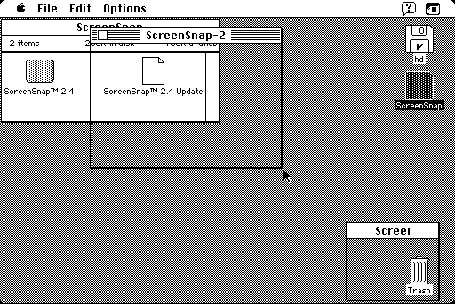

Download
screensnap2.4.zip (106K) ScreenSnap 2.4 repackaged into a zipped hfs disk image and checksum file. The disk image can be mounted with Mini vMac.
screensnap2.4.cpt.hqx (152K) ScreenSnap 2.4 in the original format.
copyright: Vaughan Johnson
mod date: Dec 9, 1993
license: shareware
Lets "you take a snapshot of any rectangular portion of the Macintosh screen and save it in a window for later use. Once created, the snapshot can be inverted, moved, saved as a PICT file, copied to the Clipboard (and pasted into applications), printed, or just left hanging around on-screen for reference. Because ScreenSnap uses PICT format for its files, it can read the output of most drawing programs, and be used as a PICT file viewer."

If you find these downloads useful, please consider helping the Gryphel Project, which hosts them.
Here are the md5 checksums for the downloads, signed with Gryphel Key 5:
--------- GRY SIGNED TEXT --------- 170478a8e54d1bffb4e2c1efac92e19e screensnap2.4.zip d4fb738717077f8bc45b825d3386541e screensnap2.4.cpt.hqx ------- BEGIN GRY SIGNATURE ------- Gry/4Xa8CFcUzxdN/GPZL3oejcDMGGa2+YHck2WblBy6AdBO/uqoSvT7kSmEbWR+ mKKfyV9RAXTpdh2L6GHfoPrbqyhitg+MkpHQzp638ZJpKaT04Yw1RYODj66ybPmG WwSNNFAId4PPtyAIPw1eITfibwWxsznmE6CvJNViJY4npa7VoHsfV2IJzVccXBAo -------- END GRY SIGNATURE --------